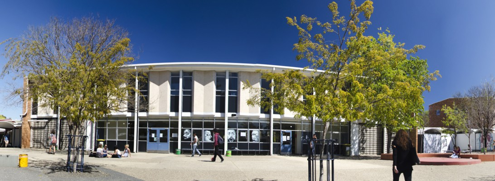
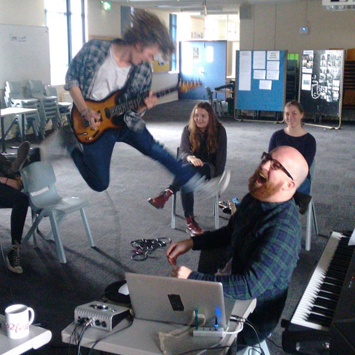

| Block A | Block B | Block C | Block D | Home | Block F | Block L | Block S | Switch CSS |
E BlockNarrabundah College's E block is a dynamic space where music fills the air and students gather to refuel. In the music classrooms, harmonious melodies resound as students hone their talents under dedicated instructors. Adjacent, the cantine offers sustenance, despite its culinary reputation. Despite its flaws, E block remains a cherished hub where students nourish their passion for music and camaraderie, embodying the spirit of the college community. |
 |
|  |
Still E BlockNarrabundah College's E block serves as a vibrant hub for musical exploration and culinary respite. Within its walls, students immerse themselves in the captivating world of music while also seeking refuge in the cantine, despite its less-than-stellar culinary offerings. In the music classrooms of E block, harmonious melodies fill the air as students hone their musical talents under the guidance of passionate instructors. From learning to play instruments to mastering vocal techniques, students embrace the joy of making music together, forming bonds that transcend the confines of the classroom. Adjacent to the music rooms, the cantine offers a refuge for hungry students seeking sustenance between classes. Despite its reputation for less-than-ideal fare, students gather here to refuel and recharge, finding solace in each other's company and the occasional hidden gem among the cafeteria offerings. Despite its culinary shortcomings, E block remains a cherished space where students come together to nourish their passions for both music and camaraderie. As melodies mingle with the aroma of cafeteria cuisine, the block buzzes with energy and a sense of community, embodying the spirit of Narrabundah College's diverse and vibrant student body. |